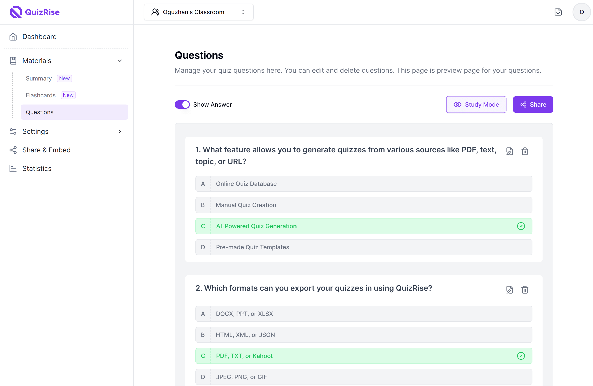

Test your knowledge with our simple quiz.
This quiz contains multiple questions from programming and general knowledge.
Java, HTML, Basic Computer Science, General Knowledge.
Beginner to Intermediate level questions.
Read instructions before starting the quiz.
Attempt all questions carefully.
An Online Quiz Platform is a web-based system that allows users to test their knowledge through interactive quizzes and digital assessments. Many schools and colleges are using online quiz platforms to improve the learning experience and make knowledge evaluation easier for students.
Through web applications and digital learning portals, students can participate in quizzes on subjects like Java, HTML, and General Knowledge. These platforms allow users to attempt quizzes anytime and view instant results after submitting their answers.
Most quiz systems include features such as multiple-choice questions, time limits, and automatic scoring. These features help learners improve their understanding and track their performance in different subjects available on the quiz platform.
According to learning experts[1], quiz-based learning helps students remember concepts better and improves their problem-solving skills. Many platforms also provide practice quizzes for students preparing for exams.
Educational institutions believe that online quizzes will become an
important part of modern learning, gradually replacing
paper-based quizzes with faster and more efficient
digital assessment methods.

